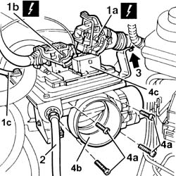

1056B15 throttle body intergral with mds - r r
- Path
- Procedures > 10 ENGINE > 1056 PETROL INJECTION SYSTEM > 1056B multi-point injection system (mpi) > 1056B15 throttle body intergral with mds - r r
- Kind
- repair procedure (removal / refitting; the operation number is the code)
- Applies to
- engines: 1.6 TS , 1.8 TS; all production periods
- Interactive page
- https://sloeber94.github.io/elrnDB-a156/en/#/3237681
Applies to: engines: 1.6 TS ; all production periods
 Removing
Removing
 Refitting
RefittingEnsure that the ignition key is in stop position, then disconnect the battery negative terminal.
 | Name | Connector |
|---|---|---|
- | Battery |
1016A40 ignition coil cover on cylinder head- r+r
1048A34 sleeve(s) from flow meter to air supply capacity case - r + r
Disconnect the electrical connection from the throttle body integral with the M.D.S.
| Name | Connector |
|---|---|---|
- | Throttle body actuator |
1. Disconnect electrical connections (1a) and (1b) from the injection/ignition control unit and earth lead (1c) from the throttle body integral with the M.D.S.
| Name | Connector |
|---|---|---|
1a | Engine management ECU |
| Name | Connector |
|---|---|---|
1b | Engine management ECU |
2. Disconnect the accelerator cable from the throttle body integral with the M.D.S.
3. Disconnect the injection/ignition wiring from the mounting bracket.
4. Undo bolts (4a) and remove the throttle body integral with the M.D.S. (4b) complete with the injection/ignition control unit (4c).

Applies to: engines: 1.6 TS ; all production periods
Refitting
RemovingFit the throttle body integrated with the M.D.S. complete with injection/ignition control unit and fix it tightening the bolts to the recommended torque.
 | Fastening | Component | Ø | Value (daNm) |
|---|---|---|---|---|
- | Bolt | BUTTERFLY VALVE CASE/S (MPI) | M6 | Air chamber side 0.8 - 1.1 |
Fix the injection/ignition wiring to the mounting bracket.
Connect the accelerator cable to the throttle body integral with M.D.S. and adjust it (refer to op. 1068A30 accelerator control cable - r + r ).
Connect the earth lead to the throttle body integral with M.D.S.
Connect the electrical connections to the injection/ignition control unit.
Connect the electrical connection to the throttle body integral with M.D.S.
1048A34 sleeve(s) from flow meter to air supply capacity case - r + r
1016A40 ignition coil cover on cylinder head- r+r
Connect the battery terminal (-).
Topics linked from this page (8)
- 1016A40 ignition coil cover on cylinder head- r+r
- 1048A34 sleeve(s) from flow meter to air supply capacity case - r + r
- 1056B81 run electronic ignition/injection control unit (single) self-learning procedure
- 1068A30 accelerator control cable - r + r
- A1B Battery ( BATTERY NEGATIVE )
- M10A Engine management ECU ( ENGINE )
- M10B Engine management ECU ( ENGINE )
- N75 Throttle body actuator